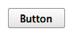

Button QML Type
A push button with a text label. More...
| Import Statement: | import QtQuick.Controls 1.4 |
| Since: | Qt 5.1 |
| Inherits: | |
| Inherited By: |
Properties
Detailed Description

The push button is perhaps the most commonly used widget in any graphical user interface. Pushing (or clicking) a button commands the computer to perform some action or answer a question. Common examples of buttons are OK, Apply, Cancel, Close, Yes, No, and Help buttons.
Button { text: "Button" }
Button is similar to the QPushButton widget.
You can create a custom appearance for a Button by assigning a ButtonStyle.
Property Documentation
isDefault : bool |
This property holds whether the push button is the default button. Default buttons decide what happens when the user presses enter in a dialog without giving a button explicit focus.
Note: This property only changes the appearance of the button. The expected behavior needs to be implemented by the user.
The default value is false.
menu : Menu |
Assign a Menu to this property to get a pull-down menu button.
The default value is null.